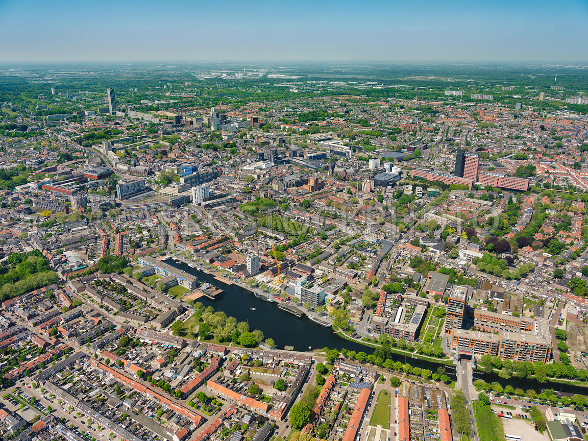

01 — Introduction
About Tilburg
Tilburg is a city in the southern part of the Netherlands, in the province of North Brabant. It has around 220,000 inhabitants and is known for its industrial history, cultural festivals, and large student population.

Aerial view of Tilburg
02 — Facts
Interesting Facts
- Tilburg used to be one of the most important wool and textile industry cities in the Netherlands.
- The Dutch King traditionally visits Tilburg during King’s Day.
- Tilburg University attracts many international students.
- The Tilburg Fair is the largest funfair in the Benelux.
- Old factories have been transformed into creative spaces.
03 — Culture
Events & Culture
Tilburg Fair
One of the biggest funfairs in Europe.


Left: Tilburg Fair | Right: Tilburg Pride Walk
Carnival
Celebrated with parades and street parties.


Left: Carnival in Tilburg | Right: Carnival parade
013 Poppodium
One of the largest music venues in the Netherlands.

013 Poppodium — a major music venue
04 — Places
Notable Locations
Some of the most famous places to visit include:

Spoorzone
Creative district in a former railway area.

De Pont Museum
Modern art museum in a former factory.

Textile Museum
History of Tilburg’s textile industry.

Piushaven
Waterfront with restaurants and terraces.

Leijpark
Large park perfect for relaxing.